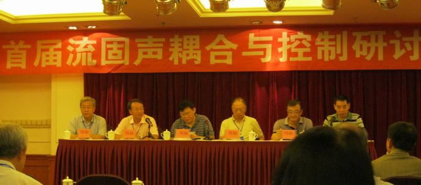
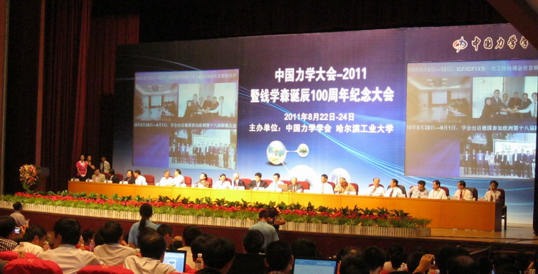

 |
Dr. Gao attended the first “Fluid, solid and sound” conference held in Yinchuang in July and the “2011 China Mechanics” meeting in Harbin. Dr. Gao presented the recent progresses in the active flow control from Turbulence Control Lab in DUT. |
 |